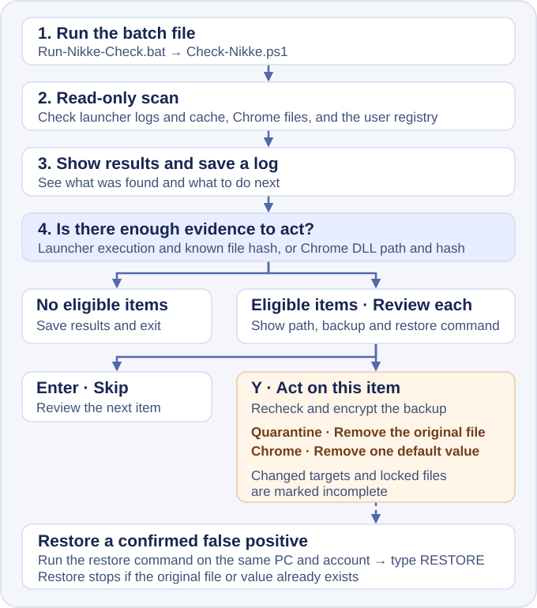

NIKKE Launcher
Checker
Check Windows records for signs of exposure, downloads, and malware execution.


How to run
- Extract the ZIP and keep
Run-Nikke-Check.batandCheck-Nikke.ps1in the same folder. - Sign in to the Windows account you used for NIKKE and double-click the batch file. If you know where NIKKE is installed, you can also drag that folder onto the batch file.
- Read the results and next steps on screen. The
logsfolder contains the detailed report.
The screen and log follow your Windows display language. The tool supports Korean, English, and Japanese and falls back to English. To pick English, open the tool folder in File Explorer, type powershell in the address bar, then run the command below.
.\Run-Nikke-Check.bat -Language enThe scan reads existing records and saves a log. If there is enough evidence, you can quarantine a file or stop Chrome from loading a suspicious DLL. Check the exact path, backup location, and restore command on screen. Type Y to act on that item or press Enter to skip it.
If you confirm a false positive, sign in to the same Windows account on the same PC. Open the tool folder in File Explorer and type powershell in the address bar. Paste the restore command shown earlier. If the path is correct, type RESTORE. Restore stops if a file or registry value already exists at the original location.
What to do after the scan
- Execution or automatic startup in Chrome
- Disconnect from the internet and close the launcher. On another trusted device, change your passwords and sign out all devices. On a personal PC, save the antivirus detection record before removing quarantined threats, and consider a clean Windows install.
- Download traces
- Disconnect from the internet and close the launcher. Save the scan log, run your antivirus, uninstall the launcher, then check again. If the malware may have run, secure your accounts from another device.
- Exposure or download address
- Close the launcher and save the scan log. On a personal PC, uninstall NIKKE in Windows Settings. If a launcher cache folder listed in the results remains, delete that folder. Check the official notice for the fixed launcher, then reinstall from the official source.
- Inconclusive
- Run the scan again from the Windows account you used for NIKKE and specify the installation folder.
- No known traces found
- The scan found no known traces in the records it could read. Deleted or unreadable records are outside its coverage.
On a work PC, contact your security team before cleanup. On a personal PC, compare paths in the scan log with the antivirus detection record before removing a quarantined file. Uninstall apps in Windows · Windows Security Protection history